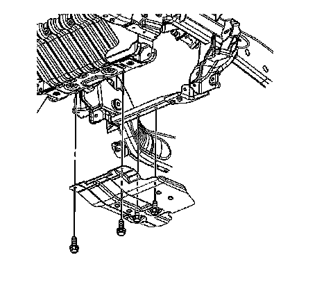

Shield Replacement
Shield Replacement
Removal Procedure
1. Raise the vehicle. Refer to Lifting and Jacking the Vehicle.

2. Remove the front differential carrier shield bolts.
3. Remove the front differential carrier shield.
Installation Procedure
1. Install the front differential carrier shield.
Notice: Refer to Fastener Notice.
2. Install the front differential carrier shield bolts.
Tighten the front differential carrier shield bolts to 20 Nm (15 lb ft).
3. Lower the vehicle.